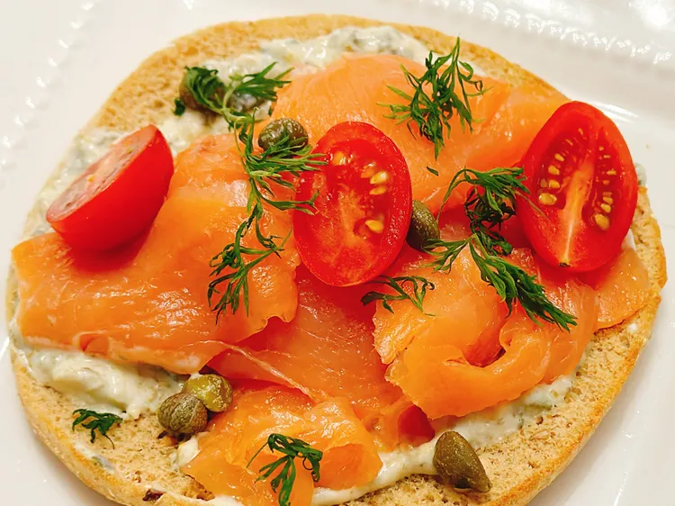

Salmon FlatBread

Description
This smoked salmon flatbread is made with toasted multigrain sandwich thins, topped with tzatziki, smoked salmon, capers, tomatoes, and dill. This combination really works, and you can easily customize with your favorite spread, herbs, or fresh toppings for breakfast, brunch, or a light lunch.
Ingredients
- 1 (12 ounce) package multigrain sandwich thins, separated
- 10 ounces spinach Parmesan tzatziki spread
- 4 (3 ounce) packages smoked salmon
- 2 tablespoons capers, drained, or as needed
- fresh dill sprigs, for garnish
- 20 grape tomatoes, halved
Steps
- Preheat the oven to 375 degrees F (190 degrees C). Split sandwich thins apart; place on a baking sheet.
- Toast in the preheated oven until golden brown, about 5 minutes.
- Spread each sandwich thin with 1 to 2 tablespoons tzatziki sauce.
Home